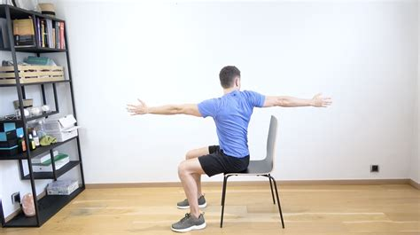
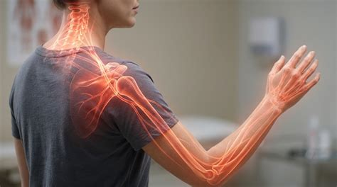

La colonne vertébrale (ou rachis) est une structure biologique solide, adaptable et conçue pour le mouvement. Qu'il s'agisse d'une douleur lombaire, d'un torticolis, d'une cervicalgie ou d'une irradiation dans la jambe ou le bras, l'objectif du bilan est de comprendre la cause mécanique de vos symptômes pour construire une rééducation ciblée.

Votre dos est-il vraiment si fragile ?
On entend fréquemment en consultation des craintes comme : « J'ai une vertèbre déplacée », « Mon dos est complètement usé » ou « Il ne faut surtout pas se pencher en avant ». Ces croyances entretiennent une appréhension du mouvement (kinésiophobie) qui peut paralyser le quotidien.
D'où vient le mythe du « dos fragile » ?
Saviez-vous que l'une des études historiques affirmant que la flexion répétée du dos détruisait les disques intervertébraux a été réalisée... sur des segments de colonnes cervicales de porcs morts ? Ces échantillons étaient soumis mécaniquement à une flexion par seconde pendant des milliers de cycles ininterrompus (Callaghan & McGill, 2001).
Un rachis humain vivant ne fonctionne pas ainsi : il est vascularisé, s'adapte, se renforce et tire bénéfice du mouvement progressif.
Le déroulement du bilan au cabinet
La prise en charge débute toujours par une évaluation clinique approfondie à Epagny Metz-Tessy. Il ne s'agit pas d'appliquer un protocole rigide, mais d'observer la réponse symptomatique de votre organisme :
- Interrogatoire précis : analyser le mode d'apparition, les positions qui soulagent ou aggravent, et vos objectifs personnels.
- Examen mécanique (MDT / McKenzie) : recherche de mouvements répétés ou de postures susceptibles de réduire ou de centraliser les symptômes.
- Une démarche progressive qui demande parfois de la patience : la réponse à un exercice n'est pas toujours immédiate. Il faut parfois plusieurs séances et des ajustements pour y voir clair. Dans certaines situations cliniques, si la kinésithérapie s'avère inefficace ou si des signes d'alerte apparaissent, une réorientation vers votre médecin généraliste ou un spécialiste est mise en place.
Rachis cervical : Cervicalgie et Névralgie Cervico-Brachiale (NCB)
Le traitement du rachis ne concerne pas uniquement le bas du dos. Les douleurs du cou (cervicalgies) et les irradiations nerveuses dans le membre supérieur font partie des motifs de consultation très fréquents au cabinet.

La Névralgie Cervico-Brachiale (NCB) ou « sciatique du bras »
Une irritation mécanique ou inflammatoire d'une racine nerveuse au niveau cervical peut provoquer une névralgie cervico-brachiale (NCB). Cette atteinte se traduit par une douleur partant du cou ou de l'omoplate et descendant dans l'épaule, le bras, l'avant-bras jusqu'aux doigts, parfois accompagnée de fourmillements, d'engourdissements ou de perte de force.
L'évaluation du rachis cervical permet de tester la mobilité articulaire, d'évaluer la sensibilité neurodynamique des nerfs du membre supérieur et d'identifier les mouvements répétés susceptibles de soulager l'irradiation dans le bras.
Une rééducation fondée sur les données probantes
L'imagerie médicale (radiographie, scanner, IRM) est un outil utile, mais elle montre des structures anatomiques et non la douleur. De nombreuses anomalies (discopathies, hernies discales, arthrose) sont très fréquemment observées chez des individus en parfaite santé et sans la moindre douleur (Brinjikji et al., 2015). Le bilan de kinésithérapie permet de faire le lien entre ce que vous ressentez cliniquement et vos examens.
Pour approfondir ce sujet et comprendre la prévalence des découvertes fortuites à l'imagerie, vous pouvez lire notre article complet : Mon IRM montre une hernie discale : faut-il s'inquiéter ?.
Questions fréquentes
Faut-il systématiquement passer une IRM cervicale ou lombaire avant de consulter ?
Non. En l'absence de signes d'alerte spécifiques (déficit moteur brutal, traumatisme violent, contexte général particulier), l'imagerie n'est pas un préalable obligatoire. L'examen clinique oriente la prise en charge.
Peut-on "remettre en place" une vertèbre cervicale ou lombaire ?
Non, une vertèbre ne se déplace pas. Les bruits articulaires parfois entendus lors des mobilisations sont dus à des variations de pression dans le liquide synovial (cavitation), et non à un os qui se réaligne.
Références scientifiques & Littérature
- Callaghan JP, McGill SM. Intervertebral disc herniation: studies on a low-load repetitive flexion model. Clinical Biomechanics (Bristol, Avon), 2001; 16(1):28-37.
- Brinjikji W, Luetmer PH, Comstock B, et al. Systematic literature review of imaging features of spinal degeneration in asymptomatic populations. American Journal of Neuroradiology (AJNR), 2015; 36(4):811-816.
- Haute Autorité de Santé (HAS). Prise en charge du patient présentant une lombalgie commune. Recommandations de bonne pratique, 2019.